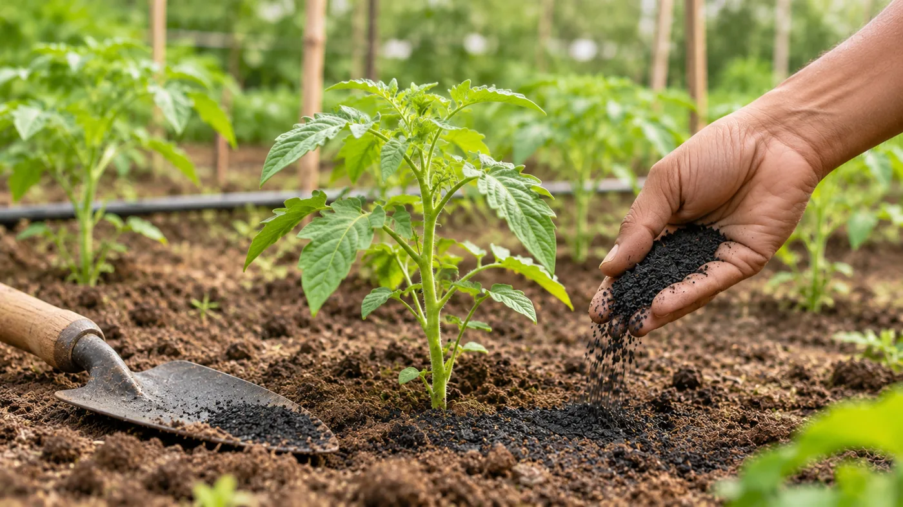

01
Agriculture & Horticulture
Biochar can be incorporated into soil-management and growing-media programmes to support soil structure, water retention and nutrient management. Wood vinegar is also being explored for plant-care and crop-management applications, subject to appropriate dilution, testing and crop suitability.
Products
- Biochar
- Wood Vinegar
- Pyrolysis Kilns